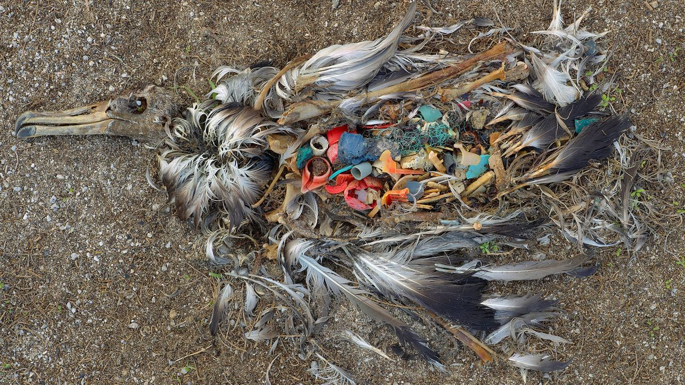
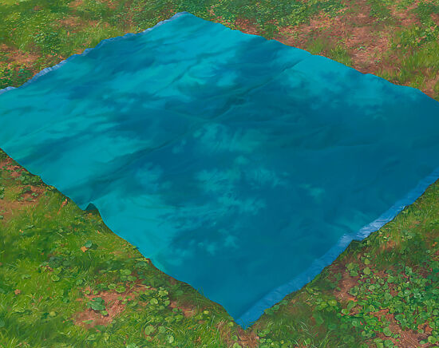

Writing
← Back
Life Without the Piano
Ryan P.
Life Without the Piano
Ryan P.
I like to think of who I’d be
If in the whiteness of the clouds
A Steinway, carved from ivory
Was teetering amidst the shroud
And when I picked the wicked way
Or chose the angel undersea
Or if my morals I betrayed
That Steinway would fall onto me
A wind would burden heavy skies
Would stir the rains and pallid day
And tipping off its fulcrum high
It screamed across the airs, away
Beneath, I’d see a shadow form
That sharpened like a leaden snare
I’d turn to see what fate I bore
And see my face reflected there
They’d hear the note in distant towns
A strident chord of keys afire
Of ivory shrapnel on the ground
Of sharps and flats among the briars
They’d find me flattened underneath
My yellowed bones among the white
With keys supplanting all my teeth
And pinblocks to eclipse my sight
O what a righteous man I’d be
If every moment of the day
I understood the end of me
Was just one wrongful deed away
Then nothing would my morals taint
And upright everywhere I’d go
They’d hail me as the greatest saint
The purest man they’d ever known
But no such instrument exists
So I don’t have to change a thing
I’ll pick whatever way I wish
And stick to merely wondering
← Back
Her Plastic Heart
Ryan Posadas
An ekphrastic of Chris Jordan’s 2009 photograph of an albatross.

This is stillness after motion, an end like its beginning
This grassless glade, the last of her migrations
She flew a wide spiral without a spoke
Through a thousand undulating cities
Chasing the flagging heat of autumn’s day
From a brightness like the bottoms of clouds
These are her eyes, fixed on something flashing
The greener, sweeter grass on the next knoll
The higher peak, with its snowy locks and uprearing head
The triumphant lacquer in the jaws of oceans
Yet her eyes never turned to look inward
To chart the hilly regions of the mind
These are her restless wings, spread too thin
They flee the man who has drugged himself on meditation
And the dog who contents itself in the fenced yard
Rapidly she leaps forward, at the next sky with its fairer sun
To idle for a moment is to slip through a rent in the clouds
And pitch back down into the world
This is the tombstone of all thought
The poison that we doubt until we drink it ourselves
The hunger for gravity from that which floats
These splintering pieces are what she fetches
To plug the hourglass’s eye, though they cannot hold
And the sand will weep on, indifferent of their color
This is the symbol of her soul, her plastic heart
Vibrant and dimensionless, unbeaten and unbeating
Varnished so smoothly it is without handholds
And it will remain here long after the body goes
After the hoarfrost comes to break her bones
After the animals come to feast on her flesh
This is motion after stillness, and thus it all begins anew
A cold, spiraling wind blows through the glade
Whistles something sweet in the hollow of her pieces
Scatters her drooping feathers into the sky
So that they may weep down through the air
And with outstretched hand, you may grab one
← Back
Blue Blanket
Ryan P.
An ekphrastic poem after Catherine Murphy’s painting Blue Blanket.

she knows he isn't coming
and yet still she waits
beneath the fidgeting shadows of oak leaves
above a blanket that she cannot smooth
holding the handle of a wicker basket with
a grip hotter than the food it contains
she wonders if he was ever planning to come
or if after they had last said their goodbyes
he had decided it right then and there
she exhales and becomes nothing but wind
she diffuses, outward, upward, until she is
the space between blades of grass
and the gaps between unstill leaves
and the vacancies between stains of cloud
and from the endless whirl of skies
she looks down at her tiny body beside the oak
and the teardrop of blue that is her blanket—
the blanket she'd borrowed from her mother
and would return without having sat on
eaten or drank atop of, spoken across
with someone who would love nothing more
than to make her smile
then she returns to her body
inhales deeply, and in doing so
breathes the sweet perfumes
of her baking
her grip loosens as she resolves
not to let her efforts go to waste
← Back
to the sun
ryan p.
man had once thought cleverly
and asked why he must never leave
looked to windward and saw a line
where mountain faces hemmed the sky
tall at dusk and short at dawn
man built high in Babylon
but built on hourglass’s sand
God swung down His mighty hand
and rubble streaked the skies with fire
yet God had not crushed man’s desire
so then man looked not up but out
trekked across the desert droughts
sailed the rolling crests of blue
walked the greener pastures through
and where the mossy mountains parted
found himself back where he started
∗ ∗ ∗
on his voyage, he sowed his seeds
and high sprang towers from the weeds
around the Earth he raised bright structures
again asked man which way was upward
but God answered man’s question not
and up became the way man forgot
yet man knew height and all too well
so tall stood man and nothing fell
his spires clawed at plumes of cloud
his antennas bore his voice so loud
he etched his contrails on steeps of sky
and found nothing on their other side
he fired rockets from the garden’s wood
where none could stand, man then stood
he went farther beyond his fathers before
unsure now what he was searching for
pitching through this snaking dark
towards the sun, that dogged spark
behind, his home winked out of sight
and heedless man slipped into night
elating his Earthly bonds unfettered
O how man thought himself clever
← Back
Shuffling Papers
There is nothing more than doors
Doors and the paths between them
Paths winding like the incoherent
Arguments of infants and madmen
There is nothing more than doors
Each composed of reality itself
Each enduring and impalpable
One standing just before, another
Just behind, perpetually in motion
Remember our sandfort and moat
How the bitter blue waves advanced
And the moody sea razed our pillars
And, afterward, the beach was smooth
And shiny, like a fresh-molted boa
And as tightly as I held your hand
Time slid around us, and carried us
On His back, through rows of doors
And though we groped for some axis
Or a lantern to break the celestial dark
Time, downpouring and upspringing
Passed, indifferent, like a heavy wind
To an afternoon, on an open field
Where we saw a doe and her fawns
Grazing near the clapboard farmhouse
We watched until they wandered off
Into the trees, over the moss-clad fence
Through doors of their own design
And we did the same, falling asleep
Under the elm to the hum of cicadas
And in our dreams, we peeked into
Doors ajar, light spilling from within
At places designedly undesigned
Places time had yet to rub His snout
Of evening dust and morning dew
Lands of titans and of leopard stars
And of second chances and orchids
Then I opened my eyes to Winter
And the children, seeing it’d snowed
Asked for hot cocoa, and so we sat
Around the wooden table, hands
Pressed against the warmth of our mugs
Watching snow blanket the yard
Imagining you were sitting
In the vacant wooden chair
And shuffling though the paper
And time, always present, tilted my head
And I heard distant school bells
The sound of your sweet laugh
And I wished fruitlessly
That the front door would open
And you would join us at the table
And fill the heavy silence